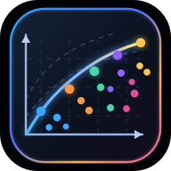

前沿性价比 · 推荐
GPT‑6.1 Sol · Medium
在 AA Index ≥48（约为全局最高的 83%）的档位里，当前实测任务成本最低。
AA Index 48AA cost $0.21/task≈2.54× Luna Max

跨厂商统一口径：纵轴默认使用 Artificial Analysis Intelligence Index 相对归一化；横轴使用每项 Intelligence Index 任务的实际成本，并以 GPT‑6 Luna Max = 1× 归一。High / XHigh / Max 可叠加长任务 Agent 消耗修正。
DeepSeek V4.1 Flash · 1017：10 月 17 日已同步替换网页、App 和 API；调用 ID 仍是 deepseek-flash，模型 Token 价格不变。新版尚无可核验的独立 AA 1017 数据，0910 版旧 AA 数据在图中默认展示并标明历史版本，1017 版另列为待测，避免混用。官方更新日志
在 AA Index ≥48（约为全局最高的 83%）的档位里，当前实测任务成本最低。
当前统一 AA Intelligence Index 中本页最高：58。适合质量优先、预算次要的最难任务。
小米开放权重旗舰，AA Index 46、$0.13/task；与原推荐 GLM-5.3 Flash 相比能力更高、单任务成本更低。
越靠左上越优；密集散点悬停展开选择环，点击模型才显示详情；触屏点击散点展开。叉形点 = 估算。
低端模型会因价格极低而数学上碾压，但不一定能完成高难任务。本页将“前沿性价比”定义为：先达到能力门槛，再找最低任务成本；默认门槛 AA Index ≥48。
AA 单任务成本已包含 reasoning token。为贴近长 Agent loop 的订阅额度体感，额外可选修正：High ×1.05、XHigh ×1.10、Max ×1.18。它是经验修正，不是厂商官方计费倍率。
DeepSeek / GLM / Kimi / Gemini 的部分 reasoning 档位缺少当前 AA 成本数据时，使用官方档位与 token budget + 已测端点插值；图中始终以叉形空心点标出，可一键隐藏。
| Provider | Model | Effort | AA Index | 能力 | $/task | 消耗倍率 | 数据 |
|---|
API 单价和订阅额度不是同一件事，因此单独比较；xAI 的 Grok / Cursor 套餐使用共享周额度。
xAI / Grok（2026-10）：新增 Grok 4.7 与 4.6 独立 AA 实测档位；官方 API 支持 Low / Medium / High（默认）/ XHigh，4.7 Medium 暂无已核实统一 AA 成本数据，故不生成估算点。新 X Subscription：Plus $8、Premium $30、Super $100、Ultra $200/月，分别为 Plus 1×、4×、15×、50× 共享每周使用额度；Grok / Cursor 共用，API 调用单独收费。旧 SuperGrok 订户可保留原订阅。官方套餐 · 官方模型更新。
Xiaomi MiMo V2.6（9/22 发布）：主图新增 Pro 与 Flash 的 AA 实测点（分别为 46 / $0.13、38 / $0.06）。Pro UltraSpeed 输出速度最高 20 倍，但海外 API 价格为普通 Pro 的 10 倍，缺少独立 AA 实测，不作为第三个能力点。官方海外实时 API（每百万 tokens）：Pro 输入 $0.435 / 输出 $0.87；Flash $0.14 / $0.28；UltraSpeed $4.35 / $8.70。Token Plan 与按量 API 余额互不通用，原 V2.5-Pro / V2.5 将于 10/21 停用。官方 API 定价 · 模型发布。
DeepSeek 10/17：V4.1 Flash 已升级至 DeepSeek-V4.1-Flash-1017，默认调用名、Token 峰谷价格、非思考与 low/high/max 思考档位保持不变。官方 Terminal-Bench 4.0：31.2 → 42.3，属于厂商自测而非 AA 实测。新 Search / Fetch 工具 API 每 1000 次成功请求各 $0.75；通过 DeepSeek Harness / Claude Code / Codex 的服务端 Search / Fetch 调用在北京时间 2026-11-01 00:00 前免单独请求费，之后按次计费；模型 token 费用另计。发布原文 · 官方定价。
OpenAI Ultrafast 政策更新（10/8）：GPT-6.1 Sol 已新增 Ultrafast 服务档位；API 标价 $12/M input、$60/M output（Standard 的 6×）。Work/Codex 仅 Pro $500 和符合资格的 Enterprise/Edu 可用；Pro $500 内含用量消耗 8×、后续 credits 消耗 6×。此为速度与计费模式变更，不是新模型或独立 AA 实测点。官方 API 定价 · Work/Codex 用量。
Gemini 4 Argon（10/13 GA）：Google 将 gemini-4-argon 从限量预览转为正式开放。Gemini App 与搜索 AI Mode 向符合条件的 AI Pro / Ultra 订户开放，Antigravity 中的 Argon 面向 Ultra；付费 Gemini API 独立计费，不等同 App 订阅额度。API 价格至 11/30 为 $2/M 输入、$10/M 输出，12/1 起分别为 $4/M、$20/M；缓存命中输入优惠 95%。官方支持 Low / Medium / High 思考强度，但当前 AA 仅保留可对比的 High 实测，不补造其他点。Google API 官方文档 · Gemini App 官方公告。
Kimi 中国区新套餐（10/12 核实）：Go ¥49、Plus ¥99、Pro ¥199、Max ¥699/月；新 Go 不含 Kimi Code，Plus 起支持 Kimi Code。新套餐 Kimi Code 取消每周限额，但滚动 5 小时限额及所有功能共享的月度额度仍生效；Andante / Moderato / Allegretto / Allegro 属于继续可用的旧版存量订阅，未自动迁移。官方定价 · 新旧限额规则。
Google 订阅已按官方重整：AI Plus $4.99、AI Pro $19.99、AI Ultra 5x $99.99、Ultra 20x $199.99（美国月费）。2026-10-09 起个人 Gemini App 模型权限陆续调整；手动模型选择、自动路由与 Developer API 额度须分别看待。
| Provider | Plan | 价格 | 适合 | 说明 |
|---|
套餐、促销与限额变化频繁；本页记录的是 2026-10-18 可核实信息。购买前以各厂商结算页为准。
能力优先采用 Artificial Analysis Intelligence Index v4.3.2：同一套跨厂商评测。图中“综合能力”仅做线性归一：AA Index / 58 × 100，58 为当前页面最高的 Claude Opus 5.5 Max。没有把厂商自报 benchmark 混进纵轴。
跨厂商无法直接比较 ChatGPT Work allowance、Claude session cap、Kimi credits 等内部额度。因此主图采用 AA 的 Cost per Intelligence Index Task：它把输入、缓存、reasoning 与回答 token 按各 benchmark 权重汇总，更适合跨厂商。倍率以 GPT‑6 Luna Max 的 $0.07/task 为基准；启用长任务修正时基准也同步乘 Max 系数，因此仍严格等于 1×。
只有当厂商官方确认某 reasoning 档位存在、但 AA 还没有当前统一成本测量时才插值。估算点不参与“最高能力”结论，并在 UI 中用叉形空心点与“估算”标签标识。